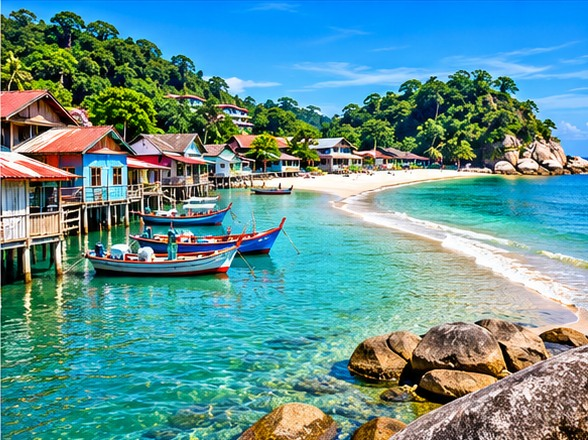

بانكور ساندي بيتش ريزورتPangkor Sandy Beach Resort
📍 Pasir Bogak
منتجع قرب باسير بوغاك
📍 خرائط المكان ↗
جزيرة ساحلية هادئة مناسبة للرحلات العائلية، وتشتهر بقرى الصيد والشواطئ والمعالم المحلية.
جزيرة للهدوء والرحلات القصيرة، مع شواطئ ومطاعم محلية وعبّارات من الساحل الغربي.
منتجع قرب باسير بوغاك
📍 خرائط المكان ↗منتجع قرب تيلوك نيبا
📍 خرائط المكان ↗منتجع قرب باسير بوغاك
📍 خرائط المكان ↗على جزيرة بانكور لاوت المجاورة وليس الجزيرة الرئيسية؛ يستخدم قاربًا خاصًا
📍 خرائط المكان ↗شاطئ مشهور بالمطاعم والأنشطة
📍 خرائط المكان ↗شاطئ واسع قريب من الفنادق
📍 خرائط المكان ↗قرب تيلوك نيبا
📍 خرائط المكان ↗شاطئ طبيعي أقل ازدحامًا
📍 خرائط المكان ↗شاطئ شمال الجزيرة
📍 خرائط المكان ↗مطعم في تيلوك نيبا؛ تحقق من ساعات العمل
📍 خرائط المكان ↗مطعم في تيلوك نيبا
📍 خرائط المكان ↗أكشاك ومطاعم محلية متعددة
📍 خرائط المكان ↗مطعم مسجل ضمن دليل الجزيرة
📍 خرائط المكان ↗فندق قرب باسير بوغاك
📍 خرائط المكان ↗إقامة قرب تيلوك نيبا
📍 خرائط المكان ↗خيار إقامة قرب تيلوك نيبا
📍 خرائط المكان ↗فندق وشقق فندقية
📍 خرائط المكان ↗ميناء انطلاق على البر الرئيسي
📍 خرائط المكان ↗ميناء عبّارات على البر الرئيسي
📍 خرائط المكان ↗مرسى الوصول إلى الجزيرة
📍 خرائط المكان ↗مطار صغير؛ لا تعتمد على وجود رحلات تجارية منتظمة
📍 خرائط المكان ↗وسيلة تنقل محلية؛ لا يوجد قطار داخل الجزيرة
📍 خرائط المكان ↗المسجد العائم في تيلوك غيدونغ
📍 خرائط المكان ↗مسجد صيني الطراز في سونغاي بينانغ كتشيل
📍 خرائط المكان ↗المعلومات إرشادية، وأسماء المنتجعات والمطاعم لا تعني توفرها في جميع المواسم. تحقق من الحجز والتشغيل ومواعيد العبارات والرحلات قبل الانطلاق. المرافئ والمطارات الموجودة على البر الرئيسي مميزة في وصفها. روابط الخرائط بحث بالاسم وليست إحداثيات مؤكدة. لا يُفترض أن كل مطعم حلال ما لم يتم التحقق من شهادة أو منشأة الطعام.
المعلومات إرشادية. تحقق من تشغيل الرحلات البحرية وحالة الطقس ومتطلبات الزيارة قبل المغادرة. الصور فنية توضيحية وليست صورًا توثيقية للمعالم.